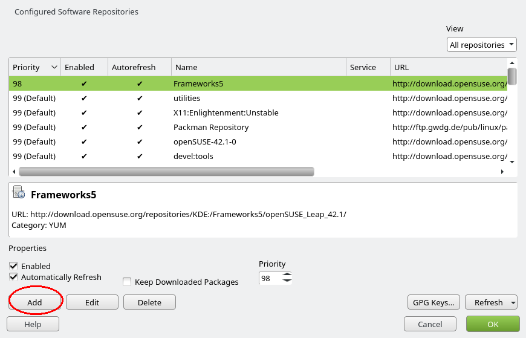
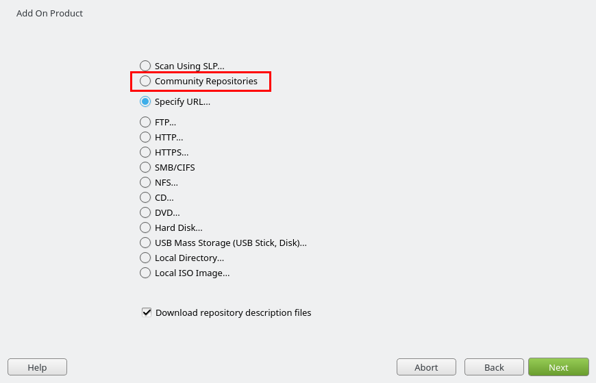
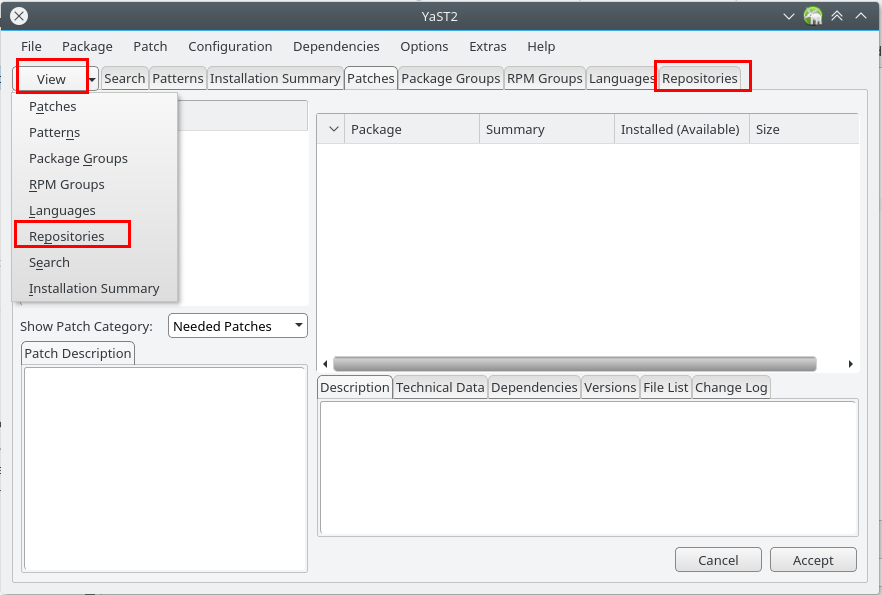
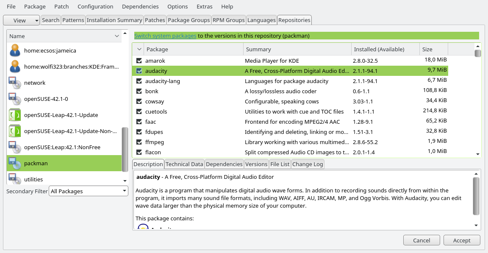

Multimedia-Codecs installieren
-
Online-Aktualisierung suchen und starten (z. B. mit Alt+F2)
-
Konfiguration → Repositories aufrufen…

-
Unten den Hinzufügen-Knopf drücken
-
Community Repositories auswählen und Weiter

-
Das packman-Repository auswählen und OK
-
Repository-Konfiguration mit OK abschließen
-
Ansicht → Repositories einblenden

-
Repositories-Tab auswählen und links packman auswählen
-
Switch System packages anklicken

-
smplayer und ffmpeg installieren